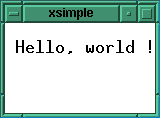

Rappels sur X11
Principes de base
X11 est le système graphique le plus populaire du système d´exploitation UNIX. Sa large distribution, le fait qu'ils soit libre de tous droits de distribution et surtout ses qualités techniques exceptionnelles en ont fait un standard de l'industrie du logiciel. Ses caractéristiques principales sont:
- l'utilisation d'une architecture client/serveur et cela dans une
totale hétérogénéité (le serveur et le client peuvent fonctionner sur
des architectures totalement différentes). Le dialogue entre le serveur
et les clients se fait conformément au protocole X ce qui permet
d'assurer la transparence du dialogue .
- la portabilité des librairies et des applications X11 (le même code tourne sur une grosse station de travail ou bien un petit PC sous Linux)
En dépits des avantages de X11, il serait faux de croire que le développement
d'une application X soit une chose simple. Les concepts utilisés sont
complexes (programmation orientée objet, gestion d'évènements, ...), le
nombre de fonctions à connaitre est important et la documentation titanesque
et parfois difficile à aborder...
Les librairies constituant X sont organisées sous forme de couches en partant
du plus bas niveau (la couche protocole) au plus haut (les toolkits). Le
schéma ci-dessous donne l'organisation de ces couches:
Comme nous le voyons sur le schéma, la couche utilisable la plus basse
(en l'occurence la Xlib) est accessible à partir des couches de plus haut
niveau (manipulant des classes et des objets: boutons, menus, etc...).
Si l'on fait une analogie entre X et les langages de programmation, on peut
considérer la Xlib comme une sorte de langage assembleur et les
couches supérieures (Xt, toolkits - Xaw ou Motif) commes des langages
évolués. On peut donc se demander si il est encore nécessaire de
connaitre aujourd'hui un langage de bas niveau alors que des outils puissants
permettent de construire une application directement "à la souris"
(pour ne citer que certains produits: XFaceMaker II de NSL, Xcessory de
ICS, IlogViews de ILOG).
Cependant, je pense qu'il n'est pas envisageable de réaliser une
(et de maintenir) un application complexe sous X sans avoir une
connaissance des couches inférieures y compris la Xlib. En plus, de
cela, la Xlib offre des performances à l'exécution inégalées (et
inégalables) par un toolkit (c'est le propre d'un assembleur).
Un programme X peut grossièrement se diviser en 3 parties:
La réception des évèements déclenchera les actions décrites à la
deuxième partie (initialisation) .
Le display définit la connexion de l'application à un serveur X.
Une fois initialisée, la valeur du display sera utilisée dans tous
les appels aux fonctions X. Le display est calculé grâce à la fonction
:
Dans le cas ou le paramètre est égal au pointeur NULL, la fonction lit
la valeur de la variable d'environnement DISPLAY, dans le cas ou l'on
passe un nom de display, il devra respecter la même syntaxe que
la variable DISPLAY soit en général:
Pour un display donné, on peut avoir plusieurs screens (unités d´affichage
enfait. En pratique, la valeur de l´écran est toujours de 0.
La fenêtre est un des concepts les plus importants sous X. Tout objet
affiché à l'écran (quelle que soit sa complexité) est décomposé en
fenêtres. Les fenêtres sont en général rectangulaires mais la release
4 (X11R4) a introduit les fenêtres "rondes" qui sont cependant peu
utilisées (voir les clients xeyes ou xman). Les
caractéristiques principales d'une fenêtres sont:
Le type X correspondant à la fenêtre est le type Window. Pour créer
simplement une fenêtre, on pourra utiliser la fonction:
Pour afficher la fenêtre, on utilisera la fonction :
Et pour l´éffacer, on utilisera :
Le système des fenêtres a une structure arborescente avec une fenêtre particulière qui
est la "mère" de toutes les autres fenêtres : la Root Window (fond de l´écran).
Un Pixmap est une fenêtre cachée permettant de faire des tracés en
arrière-plan (par exemple, sauvegarde d´une partie d´écran pour un ré-affichage
ultérieurement). Ils ne seront pas utilisés dans l´exemple qui suit.
Les évèmenents sont à la base du fonctionnement d´un programme sous X (on parle
de programmation évènementielle). Les évènements peuvent être d´origine externe
(clic/déplacement de souris, touche du clavier, ...) ou bien interne (dégagement d´une
partie de fenêtre obscurcie).
Les évènements sont identifiés grâce aux types d´évènement. En voici quelques
exemples :
Les types d´évenements sont rassemblés en masques d´évènement ou
event mask. Par exemple, le masque ButtonPressMask correspond à l´évènement
ButtonPress, ExposureMask correspond à l´évènement Expose.
Les évènements sont reçus par les fenêtre à condition que l´on ait indiqué
l´intérêt de la fenêtre pour cet évènement. Ceci se fait avec la fonction :
Le paramètre event_mask est un masque indiquant la liste des évènements
intéressant la fenêtre (exemple: ButtonPressMask | KeyPressMask). Si un évènement
reçu n´intéresse pas la fenêtre, il est en général passé à la fenêtre père de la
fenêtre courante.
Comme nous l´avons déjà indiqué, un programme X a une structure de boucle infinie de
traitement des évènements reçus. La lecture des évènements est souvent bloquante, elle
est réalisée par la fonction :
Le type XEvent correspond à une union C pouvant contenir tous les évènements
possibles. La sélection se fait sur le premier champ de l´union qui correspond au
type de l´évènement :
Pour une variable xev du type XEvent, l´accès aux différents champs
suivant la valeur du type se fait donc par xev.xbutton (pour un ButtonPress ou
un ButtonRelease), xev.xexpose (pour Expose), etc...
Le contexte graphique ou graphic context (GC) permet de
stocker dans une structure tous les attributs d´affichage (couleur de fond,
couleur de dessin, fonte, type d´affichages - Normal, XoR, ...). Une variable
de type GC est toujours passée en paramètre des fonctions de tracé.
Par exemple, pour afficher un texte dans une fenêtre, on utilisera la fonction:
Le type Drawable peut représenter une Window ou bien un Pixmap (en
fait un type permettant le dessin, d´ou le nom de Drawable)
Ce petit exemple permet d´afficher le chaine "Hello, world" dans une fenêtre X :

En premier lieu, on inclut le fichier stdio.h (ça peut toujours servir) et
surtout le fichier X11/Xlib.h qui contient les définitions des types et
constantes utilisées par la Xlib.
On déclare les variables globales utilisées par le programme (contexte graphique,
display, screen, fenêtres et "couleurs" noir et blanc).
Cette fonction est appelée lorsque la fenêtre win reçoit l´évènement
Expose. Ceci arrive dans deux cas seulement :
ATTENTION: on ne peut pas écrire dans une fenêtre AVANT qu´elle
n´ait
reçu son premier évènement Expose.
Lors de la réception de l´évènement Expose, on affiche la chaine
"Hello, world" aux coordonnées (10, 30) de la fenêtre win.
Dans le programme principal, on ouvre tout d´abord une connexion avec un serveur X
(donné par le contenu de la variable d´environnement DISPLAY). On peut
également passer la valeur du display en paramètre sur la ligne de commande (par
convention, c´est l´option -display). Il suffit ensuite d´appeler la fonction
XOpenDisplay qui renvoit un pointeur de Display si il existe.
On récupère les valeurs par défaut des différentes variables (contexte graphique,
screen, ...). Pour celà, on utilise des macros-instructions définies dans
X11/Xlib.h .
On crée ensuite la fenêtre win par la fonction XCreateSimpleWindow.
Cette fenêtre a pour parent la root-window, ses dimensions sont 100 sur 90
pixels, 2 pixels d´épaisseur pour le bord, fond blanc, bord noir.
L´appel à XSelectInput indique que la fenêtre ne s´intéresse qu´à l´évènement
Expose (ExposureMask).
La fonction XStoreName permet de nommer la fenêtre pour le
window-manager (dans notre cas, le nom xsimple s´affichera dans le
bandeau du window-manager).
Enfin, la fonction XMapWindow affiche la fenêtre à l´écran.
Voici la partie "active"du programme. C´est une boucle infinie de lecture des
évènements X (appel à la fonction XNextEvent). Les évènements sont ensuite
traités suivant leur type (ev.type) dans un switch (dans notre cas, seul
l´évènement Expose est associé à une fonction)
Pour compiler ce programme sous l´environnement de développement X, on pourra
utiliser le fichier Imakefile suivant :
avec la séquence suivante :
La programmation en Xlib est loin d´être simple et il est peu concevable de
réaliser aujourd´hui une application complète sans utiliser de toolkit (OSF-Motif,
Widgets Athena) ou même d´outil de prototypage d´applications. La compréhension
des mécanismes de base la la Xlib reste cependant une assurance pour la fiabilité
des applications développées.
Structure des librairies
Pourquoi connaitre la Xlib ?
Structure d'un programme X
Les concepts de base
Le display
Display *XOpenDisplay (nom_du_display)
char *nom_du_display;
nom_du_display:0.0 pour un terminal X (exemple: Xpierre:0)
:0.0 pour un serveur local
L´écran (screen)
Les fenêtres
Window XCreateSimpleWindow (display, parent, x, y, width, height,
border_width, border_color, background)
Display *display;
Window parent;
int x, y;
unsigned int width, height, border_width;
unsigned long border_color, background;
XMapWindow (display, w)
Display *display;
Window w;
XUnmapWindow (display, w)
Display *display;
Window w;
Les Pixmaps
Les évènements
ButtonPress appui sur le bouton de la souris
ButtonRelease relachement du bouton souris
KeyPress touche appuyée
KeyRelease touche relachée
Expose dégagement d´une fenêtre obscurcie (ou
bien premier affichage de la fenêtre)
XSelectInput(display, w, event_mask)
Display *display;
Window w;
long event_mask;
XNextEvent (display, event_return)
Display *display;
XEvent *event_return;
typedef union _XEvent {
int type;
XAnyEvent xany;
XKeyEvent xkey;
XButtonEvent xbutton;
XMotionEvent xmotion;
XCrossingEvent xcrossing;
XFocusChangeEvent xfocus;
...
};
Le contexte graphique (GC)
XDrawString(display, d, gc, x, y, string, length)
Display *display;
Drawable d;
GC gc;
int x, y;
char *string;
int length;
Un exemple simple commenté
/*
* xsimple : Affiche une chaine dans une fenetre X...
*/
#include <stdio.h>
#include <X11/Xlib.h>
GC gc;
Display *display;
int screen;
Window win, root;
unsigned long white_pixel, black_pixel;
/*
* fonction associee a l'evenement EXPOSE
*/
void expose ()
{
XDrawString (display, win, gc, 10, 30, "Hello, world !", 14);
}
/*
* programme principal
*/
main(ac, av)
int ac;
char **av;
{
char *dpyn = NULL;
/* selection du display en ligne */
if (ac == 3) {
if (strcmp (&av[1][1], "display") == 0) {
dpyn = av[2];
}
else {
fprintf (stderr, "Usage: xsimple [-display display_name]\n");
exit (1);
}
}
if ((display = XOpenDisplay (dpyn)) == NULL) {
fprintf (stderr, "Can't open Display\n");
exit (1);
}
gc = DefaultGC (display, screen);
screen = DefaultScreen (display);
root = RootWindow (display, screen);
white_pixel = WhitePixel (display, screen);
black_pixel = BlackPixel (display, screen);
win = XCreateSimpleWindow (display, root, 0, 0, 100, 90, 2, black_pixel, white_pixel);
XSelectInput (display, win, ExposureMask);
XStoreName (display, win, "xsimple");
XMapWindow (display, win);
for (;;) {
XEvent ev;
char c;
XNextEvent (display, &ev);
switch (ev.type) {
case Expose :
expose ();
break;
default :
break;
}
}
}
LDLIBS = $(XLIB)
SimpleProgramTarget(xsimple)
Conclusions
Bibliographie